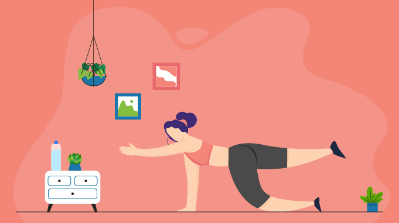

11 Workout Tips to Make Your Exercises More Effective

- 1. Take a moment to just breathe.
- 2. Hype yourself up:
- 3. Put on pump-up music:
- 4. Eliminate distractions:
- 5. Have a clear plan:
- 6. Be flexible:
- 7. Start your workout with foam rolling.
- 8. Literally tap the muscles you’re using.
- 9. Make sure you’re not too hungry.
- 10. Keep things simple.
- 11. Know that not every workout needs to leave you exhausted.
The first step to an awesome workout is getting in the right mindset. Really! If you’re thinking about your to-do list or the drama on last night’s Bachelor, you might not be focusing on putting in 100%. "Before a workout, I focus on my breathing to reduce any stress from work or my commute that may be sitting with me, giving me negative feelings before hitting the gym,” Equinox trainer and martial artist Phoenix Carnevale tells SELF. You can even do a quick breathing video exercise on your phone—anything to bring you into the present moment.
Once you're feeling focused, remind yourself that you've got this. “I start with positive self-talk to prevent myself from giving up or being overly critical,” says Carnevale. “I tell myself, ‘It's my time now.’” You can also take a few minutes before your workout to think or journal about something you love about your body and what it can accomplish, Angela Mader, trainer and founder of Fitlosophy, tells SELF. Maybe it's that your strong legs are capable of excellent squatting form, or that your core has progressed to being able to do a push-up with your knees off the ground. Whether you jot it down by hand, type something in the Notes app on your phone, or just repeat it to yourself a few times as a motto, this kind of thinking will start your workout on a grateful, positive note. And thinking positive thoughts may actually help you do better in your workout: Some research has indicated that positive self-talk leads to improved athletic performance.
Positive self-talk isn't the only way to get in the right mindset. “It always comes down to music for me,” Amelia DiDomenico, CPT, owner of Amrose Fitness, tells SELF. One of her top workout tips is to repeat her favorite tracks a few times during her training session. Making a soundtrack of your most-loved jams won’t just put you in a good mood; it may also improve your workout performance. Various small research efforts have found positive associations here, such as a 2020 Perceptual and Motor Skills study, which concluded that people who listened to “preferred music” (music they liked) during their warm-up had improved exercise performance compared with listening to no music—but listening to nonpreferred music (music they didn’t like) did not boost performance.
Avoid taking time away from your workout by putting your phone on airplane mode, says Carnevale: “It can be super tempting to respond to messages and emails or check social media, but it wastes a lot of time and causes people to lose focus. Be selfish! Your workout is the time where being self-absorbed is a good thing, so focus on you.” Especially if you are working toward something like building endurance, taking periodic phone breaks will undermine your goal—not what you want. (Of course, doing this successfully may require some prep work, like downloading any “best workout music of all time” playlists directly to your phone in advance.)
“A clear plan is your secret weapon—knowing what you're doing and why is half the battle,” Jared Kaplan, founder of Arrive, tells SELF. Having a plan of action for what to do when you get to the gym will help you feel prepared for your workout and on track, because wandering around aimlessly wastes time. If you're starting out at a new gym or are trying a new workout, it’s a good idea to set aside extra time before your workout to get familiar and have all your equipment accessible.
Your program says it’s time for bench rows, but there’s someone using the bench and they don’t seem to be finishing up any time soon. Rather than stand around waiting for it to free up, move on to the next part of your workout and come back later. The same goes for cardio equipment you might want to use. “Stair-climbing machines all busy? Find a flight of stairs, or hit the treadmill on an incline,” says Mader. So, yes, it’s good to have a plan, but be flexible—again, you don’t want to ruin any good momentum you have built up midworkout!
Experts love foam rolling for improving mobility, and the better your mobility, the better your workout is going to feel (and the better your results will be too). Improved mobility also means you'll be able to get deeper into exercises like squats and lunges. By getting deeper, you can make sure you're using proper form and that the right muscle fibers are firing, giving you the progress you're working for.
To get the best workout, you want to make sure the muscles you’re targeting are fully turned on. One easy way to do that? Tap them. Getting this kind of external feedback helps your nervous system activate in the area, Jamison says. So whether you want your glutes to fire up in a deadlift or your biceps to engage for a curl, taking a few moments to gently tap the muscle group with your fingers can help get the job done.
Arriving at the gym ravenous is a bad idea on several counts. Not eating enough before your workout can negatively affect your performance and just generally make your workout unpleasant, as SELF previously reported. And according to the Mayo Clinic, low blood sugar from waiting too long between meals causes all sorts of issues that can mess with your workout, from altering your natural heartbeat rhythm to causing changes in your vision and crankiness.
You don’t need to do a million different exercises to get a great workout. In fact, it’s often better to keep things simple, says Jamison. By limiting the amount of equipment you use (think two types of equipment, or even fewer!) and the number of moves in your workout (try about three to five exercises as a main set repeated two to three times, plus a warm-up), you won’t waste time moving around the gym or setting up loads of new equipment between circuits. In turn, you may cut down on rest time, which “generally is a good thing,” especially if your goal is to build muscle or endurance, says Jamison.
Listen, you're entitled to take it easy when you need or want to! If it turns out you're really not feeling your workout for some reason, that’s more than okay. Not every session will leave you feeling ultra energized and on top of the world—especially right now. Maybe you'll decide to go through the motions and do the workout without maximizing your effort. Or maybe you'll choose to wrap it up early and spend your time on something else that would feel better. Either option is cool, because, hey—you're human, and you're allowed to give yourself a break.